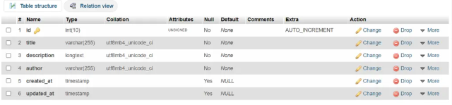
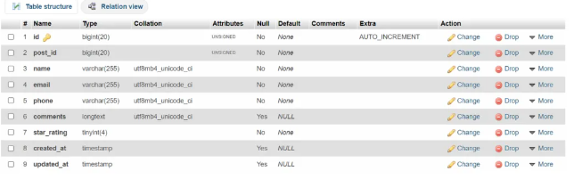

Today, I will give you an example of “How to create Rating System in Laravel”, So you can easily apply it with your laravel 5, laravel 6, laravel 7, and laravel 8 application.
Review rating is the most common module in every application, mostly you will see the review and rating system in e-commerce platforms where there is an option after every product to rate or review by the user to share his experience or feedback.
For example, to implement a review and rating system in the laravel application we create and store some posts in the database and then implement a review and rating platform after every post, where the user can select stars rating and write his comment.
Let’s get started.
We create new migration files for the “posts” and “review_ratings” table, In your cmd terminal hit the given below command.
>>>> php artisan make:migration create_posts_table
>>>> php artisan make:migration create_review_ratings_table
php artisan migrate
Posts Table :-

Review Ratings Table :-

php artisan make:model Post
php artisan make:model ReviewRating
We create a hasMany relationship in Post Model, we store post table (primary id) as a foreign key (post_id) in review_ratings table, whenever users will submit their own review or rate on each post.
php artisan make:controller PostController
Now, we make a post folder in views and then create these 3 files given below-: Create.blade.php list.blade.php view.blade.php
Note : We store post-primary ID as hidden in review_ratings table as a post_id (foreign_key) to get all related reviews and comments.
127.0.0.1:8000/post-list
In this article, we successfully integrated “Laravel Review and Rating System Example”, I hope this article will help you with your Laravel application Project.